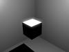
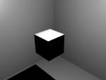
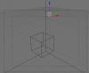
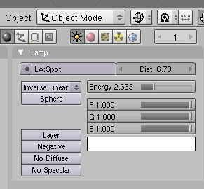
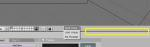
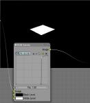
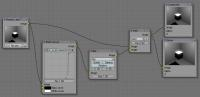

Vous êtes débutants en Blender et aimeriez apporter une touche de réalisme à vos rendus ?
Ce tutoriel vous apprendra pas à pas à utiliser le menu Node Editor, tout en réalisant un effet d'éblouissement simple, comme ceux que l'on voit dans les jeux vidéos récents :
Étant donné que le but du tutoriel n'est pas de modéliser, nous n'utiliserons que des formes cubiques. Voici le résultat : Sans et avec effet d'éblouissement  => Cliquez pour agrandir
Notre scène est très simple : elle est composée de deux cubes, une lampe, et une caméra. À la fin de cette partie, vous devrez avoir un rendu à peu près similaire :
Cliquez pour agrandir Voici les étapes à suivre pour réaliser cette scène.
Créez un nouveau fichier Blender, et mettez-vous en vue caméra (touche 0 du pavé numérique).
S'il n'y en a pas déjà un, ajoutez un cube au milieu de votre scène avec les touches Espace puis Add>Mesh>Cube.
Ensuite, dupliquez votre cube en le sélectionnant à l'aide unclic droit puis des touches Shift + D. Ne bougez pas votre cube, cliquez pour validez.
Agrandissez-le énormément avec la touche S jusqu'à ce que la caméra soit à l'intérieur du cube.  Cliquez pour agrandir Maintenant, rapprochez votre lampe de la face supérieure du cube, comme sur l'image ci-contre.
Ensuite, modifiez les caractéristiques de la lampe dans le menu shading (touche F5).

J'ai modifié la valeur Dist afin que la lampe n'éclaire pas trop notre scène, mais juste notre cube, et j'ai augmenté son intensité (Energy).
Faites un rendu (touche F12) et en fonction de celui-ci, modifiez à votre guise votre scène afin d'avoir une face du petit cube qui soit très blanche : Cliquez pour agrandir
Maintenant que nous avons notre scène (n'oubliez pas de sauvegarder), nous allons préparer notre espace de travail.  Cliquez pour agrandir Séparons notre vue 3D en deux parties : positionnez votre curseur sur la ligne noire séparant les deux fenêtres (encadrées en jaune dans l'image ci-contre), et faites un clic droit. Cliquez sur Split Area et déplacez en haut et au milieu le trait de séparation qui apparaît. Cliquez pour valider.
Maintenant, vous devez avoir trois fenêtres dont deux vues 3D. Dans la fenêtre de droite, changez son type en Node Editor. Le bouton se situe dans l'angle inférieur droit, comme sur l'image ci-dessous :
Désormais, nous allons rentrer dans le vif du sujet : le Node Editor.
Plus précisément, nous allons utiliser les composite nodes.
À quoi servent-ils ?
Les composite nodes servent à faire un post-processing. C'est-à-dire qu'une fois l'image calculée, Blender peut appliquer tout un tas de filtres et d'opérations sur notre image grâce aux informations qu'il a toujours en mémoire.
Ainsi, ces filtres et opérations sont la plupart du temps réalisables avec des logiciels de retouche d'image (comme The Gimp ou Photoshop), mais l'intérêt réside dans leur simplicité d'utilisation et dans leur efficacité.
On n'a pas besoin d'être un expert en retouche d'image pour faire un flou de profondeur. D'autant plus que Blender sait exactement où se situe chaque objet et peut donc calculer aisément le flou de profondeur dans une scène.
Bref, les composite nodes, c'est génial ! :p (Vous allez voir...)
Avant de créer tous nos filtres, on va faire un petit peu de théorie.
On veut créer un effet d'éblouissement. Pour ce faire, on va récupérer les parties très lumineuses de notre image, on va les flouter et ensuite les ajouter à notre image originale.
Commençons !
Pour avoir un aperçu en temps réel de notre image, nous allons ajouter un premier noeud en appuyant sur Espace puis Add > Output > Viewer. Sachez que chaque fenêtre représente ce qu'on appelle un noeud dans le langage Blender francophone.
Maintenant, si vous reliez le point jaune de la petite fenêtre Render Layers avec le point jaune de la fenêtre qui vient d'apparaître, votre rendu apparaît en fond d'écran. Cette fenêtre sert uniquement à prévisualiser, et ne constitue pas le rendu final, qui lui est représenté par la fenêtre intitulée Composite. Quant à la fenêtre Render Layers, elle représente l'image brute calculée par Blender.
Si le fond n'apparaît pas, calculez de nouveau un rendu avec la touche F12.
N'oubliez pas de sauvegarder votre travail régulièrement.
Maintenant, comme convenu, on va récupérer les parties lumineuses de notre image. On ajoute un noeud RGB Curves (Espace puis Add > Color > RGB Curves).
Reliez les points jaunes image des noeuds Render Layers, RGB Curves et Viewer (dans l'ordre).
Lorsque vous modifierez la courbe du noeud, vous devriez alors voir votre image de fond se modifier. Faites une courbe de ce type, afin de n'obtenir que les parties lumineuses :  Cliquez pour agrandir
L'abscisse de la courbe représente le niveau de couleur et l'ordonnée l'intensité.
Il nous reste encore à appliquer un flou avant de l'ajouter au rendu original. Pour la suite, si vous êtes gênés par le fond noir de notre image, n'hésitez pas à la désactiver en cliquant de nouveau sur Backdrop.
On appuie donc sur Espace et on clique sur Add > Filter > Blur. On relie notre nouveau noeud au précédent (RGB Curves), et à notre noeud Viewer. Modifiez les valeurs X et Y de notre noeud Blur. Une valeur à environ 30 convient parfaitement.
Nous allons combiner le résultat que l'on voit en ce moment avec l'image originale à l'aide d'un noeud Mix (touches Espace puis Add > Color > Mix). Ce noeud propose différents types de "mixage" : ici, le mode qui nous intéresse est Add. Vous remarquerez que ce noeud prend en entrée deux images pour n'en faire qu'une seule en sortie. Nous relierons à la première entrée d'image notre tout premier noeud dénommé Render Layers et pour la seconde entrée, la sortie de notre noeud Blur. Pour finir, on reliera la sortie du noeud Mix au Viewer et au noeud composite.
Vous devriez obtenir une fenêtre similaire à celle-ci :  Cliquez pour agrandir
Maintenant, vous pouvez jouer sur le facteur (Fac) du noeud Mix, pour augmenter l'effet d'éblouissement.
Ensuite on fait un joli rendu avec la touche F12. :)
Cliquez pour agrandir
Comme vous pouvez le voir ci-dessus, il n'y a rien de phénoménal, mais ça rend bien.
On peut également faire des rendus paranormaux avec ce genre de méthode, qui donnent une impression d'effets spéciaux issus de studios cinéma :
Notez que pour certains composite nodes, il faut activer des options spéciales dans le menu scene (touche F10), dans l'onglet Render Layers. Par exemple, pour un noeud Vector Blur, il faut activer le bouton Vec.
Ce que vous venez d'apprendre vous permettra avec le temps d'explorer un nouveau monde dans l'art du rendu 3D.
En effet, les rendus bruts sont largement embellis par des retouches aussi simples que celle proposée par les composite nodes de Blender.
De plus, avec cette méthode on peut aisément créer une animation sans pour autant augmenter trop sensiblement le temps de rendu.
{kind=link}
{kind=link}
{kind=link}
{kind=link}
{kind=link}
{kind=link}
{kind=link}
{kind=link}
{kind=link}
{kind=link}
{kind=link}
{kind=link}